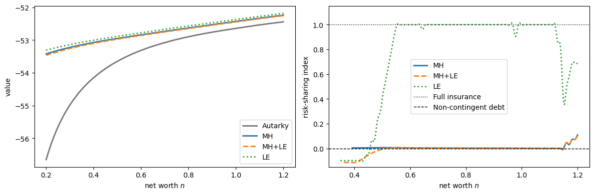
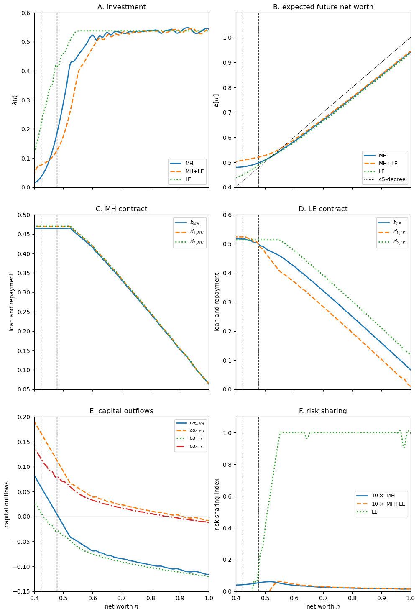
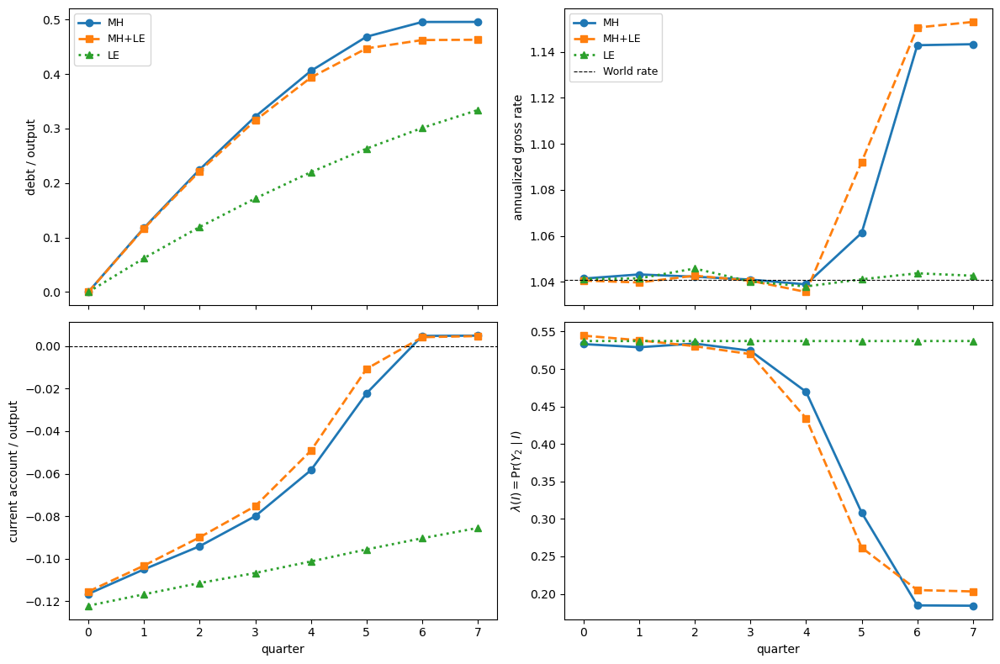
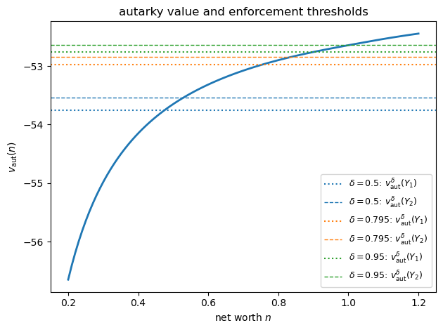
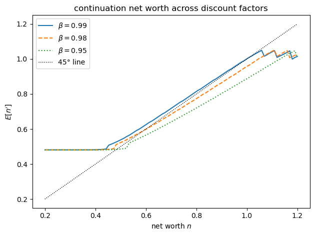

62. Capital Flows Under Moral Hazard#
62.1. Overview#
This lecture studies Tsyrennikov [2013], which revisits the infinite-horizon moral-hazard and limited-enforcement model of Atkeson [1991] (see International Lending with Moral Hazard and Risk of Repudiation) and makes two main contributions:
First-order approach: it proves (Lemma 62.1) that the borrower’s incentive-compatibility constraint can be replaced by its first-order condition, which makes the optimal contract with continuous investment tractable to compute.
Calibration and quantitative analysis: it calibrates the model to Argentina’s business cycle and compares moral hazard against a pure limited-enforcement benchmark. Unlike standard sovereign-default models, contracts here are allowed to be fully state contingent.
The central finding is that moral hazard, not limited enforcement, does most of the work in matching several key features of emerging market economies: high, volatile and countercyclical interest rate spreads, limited consumption risk-sharing, and crisis-like dynamics in which capital inflows halt and interest rates spike.
The mechanism is that moral hazard severely restricts the amount of state contingency that repayment schedules can provide.
As a result, the optimal repayment is nearly non-contingent on output.
This explains why non-contingent debt is an optimal way to finance an emerging economy.
Moral hazard also gives the model a strong internal propagation mechanism: even i.i.d. output shocks generate persistent movements in output through investment.
Tsyrennikov is also explicit about the model’s main weakness.
The mechanism improves the behavior of consumption, output and spreads, but it does not fully match the observed current-account dynamics.
62.1.1. The mechanism in brief#
The borrower can use foreign funds for either current consumption or investment.
Investment is costly today, but it raises the probability of high output tomorrow.
If investment were observable and contracts were fully enforceable, the lender could insure the borrower almost completely.
The contract would make the borrower’s continuation net worth nearly the same after low and high output, smoothing consumption across states.
Moral hazard prevents this.
When investment is hidden, full insurance gives the borrower too little reason to invest.
To make investment privately attractive, the contract must reward high output with a higher continuation value than low output:
This continuation-value spread is the borrower’s incentive to invest.
It also means that the risk-averse borrower must bear output risk.
The optimal contract therefore cannot use much state-contingent repayment to smooth consumption.
It ends up looking close to non-contingent debt: repayments vary little across output states, and insurance comes mainly from access to borrowing rather than from repayments that adjust strongly to output.
The same force creates persistence.
After a low-output realization, the borrower’s net worth falls.
Lower net worth reduces investment, lower investment lowers the probability of high output, and the economy becomes more likely to remain weak.
Thus even i.i.d. output shocks generate persistent output dynamics through the investment channel.
When net worth is low, the borrower is also closer to its borrowing limit and continuation values are more distorted by incentive provision.
This raises the implied interest rate, making spreads high, volatile and countercyclical.
Limited enforcement works differently.
It restricts repayments because the borrower must prefer repayment to default, but by itself it can still allow substantial state-contingent insurance.
Tsyrennikov’s main quantitative result is that moral hazard, rather than limited enforcement, is the friction that makes the optimal contract resemble non-contingent debt and that generates the crisis-like dynamics.
62.2. Empirical motivation#
The paper starts from three facts about Argentina, viewed as a representative emerging market economy over 1993–2005.
First, consumption is almost perfectly correlated with output and is at least as volatile as output.
Second, interest rate spreads are high, volatile and countercyclical.
Third, after a sequence of bad output realizations, capital inflows stop or reverse.
For comparison, Canada displays much smoother consumption and much weaker spread-output comovement.
The following table, condensed from the paper, highlights the contrast.
Here and in the moments table below, \(E(\cdot)\) is a mean, \(\sigma(\cdot)\) a standard deviation, and \(\rho(\cdot,\cdot)\) a correlation, while \(\rho(y)\) is the first-order autocorrelation of output.
The variables are consumption \(c\), output \(y\), the trade balance \(tb\), and the interest-rate spread \(r\) over the world risk-free rate, in annualized percentage points.
country and period |
\(\sigma(c)/\sigma(y)\) |
\(\rho(c,y)\) |
\(E(r)\) |
\(\sigma(r)\) |
\(\rho(r,y)\) |
\(\rho(tb,y)\) |
|---|---|---|---|---|---|---|
Canada, 1993:Q1–2001:Q4 |
0.55 |
0.62 |
1.51 |
0.33 |
0.23 |
0.27 |
Argentina, 1993:Q1–2001:Q4 |
1.11 |
0.97 |
8.18 |
4.73 |
-0.58 |
-0.81 |
Argentina, 1993:Q1–2005:Q4 |
1.15 |
0.99 |
7.86 |
4.78 |
-0.68 |
-0.82 |
So \(\sigma(c)/\sigma(y)\) is consumption volatility relative to output, \(\rho(c,y)\) is consumption-output comovement, and a negative \(\rho(r,y)\) or \(\rho(tb,y)\) means the spread or trade balance is countercyclical.
The moral-hazard interpretation is that foreign creditors cannot fully observe the use of borrowed funds.
This is plausible when national accounts are noisy, when governments can blur the line between consumption and investment, or when the level of investment is observable but its effective quality is distorted by misallocation, corruption or weak institutions.
62.3. The environment#
62.3.1. Technology and preferences#
The environment is a small open economy with an infinitely lived borrower.
The borrower starts each period with net worth \(n\) (output net of debt repayment), borrows \(b\) from a short-lived risk-neutral lender, invests \(I\), and consumes
Given investment \(I\), next period’s output is random and takes one of two ordered values \(Y_1 < Y_2\).
Following Atkeson [1991], output is drawn from a mixture of two fixed distributions \(g_0\) and \(g_1\), where \(g_{kj}\) denotes the probability that distribution \(g_k\) assigns to output state \(Y_j\).
Here \(g_0\) is the favorable distribution: it places more weight on high output than \(g_1\) does, so \(g_0\) first-order stochastically dominates \(g_1\).
Investment controls the mixing weight \(\lambda(I) \in [0,1]\), the probability that output is drawn from the favorable distribution \(g_0\):
so \(g(Y_j \mid I)\) is the probability of output state \(Y_j\) given investment \(I\).
The weight \(\lambda : \mathbb{R}_+ \to [0,1]\) is strictly increasing and strictly concave.
Higher investment therefore raises the weight on \(g_0\), so the output distribution under higher investment first-order stochastically dominates that under lower investment, with diminishing returns.
Note
This is the same mixture technology, and uses the same labeling, as in International Lending with Moral Hazard and Risk of Repudiation: the weight \(\lambda(I)\) multiplies the favorable distribution \(g_0\), so more investment makes high output more likely.
Tsyrennikov restricts to two output states, so the favorable distribution puts all its mass on high output and the unfavorable one on low output:
The output probabilities then reduce to
It is convenient to record how investment moves the output distribution.
Let \(\Delta g_j \equiv g_{0j} - g_{1j}\), so that \(\partial g(Y_j \mid I)/\partial I = \lambda'(I)\,\Delta g_j\).
In the two-state model \(\Delta g = (-1,\,1)\): a marginal increase in investment shifts probability away from low output and toward high output.
The functional form \(\lambda(I) = \min(I^\nu, 1)\) with \(\nu \in (0,1)\) is strictly concave and gives an interior optimum.
The borrower’s preferences are CRRA:
Lenders are risk-neutral and discount the future at factor \(\beta_c \geq \beta\), so they lend at the international gross risk-free rate \(1/\beta_c\).
Each lender lives for two periods with endowment \(M\), so the loan cannot exceed it: \(b \leq M\).
The assumption \(\beta \leq \beta_c\) captures the idea that the government of an emerging economy may have a shorter planning horizon than a typical international lender.
A contract between the two parties specifies the loan \(b\) and the repayment \(d_j\) that the borrower makes after each output state \(Y_j\).
62.3.2. Two frictions#
There are two frictions that limit the contract’s ability to smooth consumption and investment across states.
Moral hazard: lenders observe output but neither investment nor consumption.
The incentive-compatibility (IC) constraint (62.10) requires that the borrower finds the recommended investment \(I\) privately optimal.
Limited enforcement: the borrower can default, suffering a one-time output penalty.
If default occurs when output is \(Y_j\), the borrower retains only \(\delta Y_j\), with \(\delta \in (0,1)\), and then lives in autarky forever.
Let \(v_{\text{aut}}^{\delta}(Y_j)\) denote the value after default in state \(j\):
Here \(v_{\text{aut}}\) is the borrower’s autarky value, defined in the next subsection.
The superscript \(\delta\) marks the one-time output loss incurred on entering autarky.
The enforcement constraint requires
where \(v\) is the contract value function.
A larger \(\delta\) means a milder default penalty and hence a better outside option after default.
62.3.3. The autarky value function#
Without access to credit (\(b = 0\)), the borrower solves
Note that the continuation values depend only on \(Y_1\) and \(Y_2\), not on \(n\).
62.3.4. The frictionless benchmark#
If investment is contractible and contracts are fully enforceable, the borrower can trade a full set of Arrow securities with the risk-neutral lender.
The optimal repayment schedule then delivers state-independent continuation net worth:
Net worth converges to a constant, so consumption and investment are eventually constant, and the risk-sharing index defined below equals one.
This benchmark implies full risk sharing and a strongly procyclical current account — the opposite of what the data show.
It also shows what moral hazard limits: the ability to make repayments strongly state contingent without weakening investment incentives.
62.3.5. The recursive contract#
The state variable is net worth \(n\).
Atkeson [1991] establishes that the optimal long-term contract can be represented recursively with this single state, and we take this result as given.
Let
be next period’s net worth after output \(Y_j\) and repayment \(d_j\).
The contract value satisfies the Bellman equation
subject to the following constraints.
Feasibility requires the budget constraint (62.1) with nonnegative consumption \(c = n + b - \theta I \geq 0\) and nonnegative investment \(I \geq 0\).
Lender participation requires the loan not to exceed the discounted expected value of repayments,
while the lender endowment constraint caps the loan at the lender’s resources, \(b \leq M\).
The contract must also satisfy incentive compatibility (62.10) and the enforcement constraint (62.6).
The incentive constraint says that the recommended investment must be the borrower’s own best choice from the feasible set:
Since \(v\) is strictly increasing, limited enforcement can also be written as an endogenous borrowing limit:
62.4. The first-order approach#
The incentive constraint (62.10) is awkward to impose directly, because it requires re-solving the borrower’s investment problem inside the contracting problem.
Following Rogerson [1985], Tsyrennikov [2013] replaces it with the borrower’s first-order condition
which holds with equality whenever investment is interior.
Lemma 62.1 (Validity of the first-order approach)
Replacing the incentive constraint (62.10) with the relaxed first-order condition (62.12) does not change the solution of the contract problem (62.8).
This is Lemma 1 of Tsyrennikov [2013].
Proof. Fix a contract \((b, d_1, d_2)\), write \(n_j' = Y_j - d_j\) and \(c(\hat I) = n + b - \theta\hat I\), and let
be the continuation-value spread.
Using \(g(Y_j\mid\hat I) = \lambda(\hat I)\,g_{0j} + (1-\lambda(\hat I))\,g_{1j}\), a borrower who is offered this contract and invests \(\hat I\) obtains
with first two derivatives
The incentive constraint (62.10) is \(I \in \arg\max_{\hat I \in [0,\, n+b]} W(\hat I)\), while the relaxed condition (62.12) is \(W'(I) \geq 0\).
First, we show that a nonnegative spread makes the first-order condition sufficient.
Suppose \(S \geq 0\).
Since \(u'' < 0\) and \(\lambda'' < 0\), we have \(\theta^2 u''(c) < 0\) and \(\beta\,\lambda''(\hat I)\, S \leq 0\), so \(W''(\hat I) < 0\) for every \(\hat I\).
Hence \(W\) is strictly concave on \([0,\, n+b]\) and has a unique maximizer.
The Inada condition \(u'(0) = +\infty\) rules out the upper corner \(\hat I = (n+b)/\theta\), where \(c = 0\), so the maximizer is either interior, with \(W'(I) = 0\), or the lower corner \(I = 0\).
In either case the borrower’s choice is characterized by its first-order condition, so (62.10) and (62.12) — the latter holding with equality at an interior optimum — select the same investment.
Next, we show that every optimal contract can be replaced by an equivalent one with \(S \geq 0\).
Suppose an optimal contract had \(S < 0\), that is \(v(n_2') < v(n_1')\).
Then for every \(\hat I \in (0,\, n+b]\) both terms of \(W'(\hat I)\) are negative, because \(u' > 0\), \(\lambda' > 0\) and \(S < 0\), so \(W\) is strictly decreasing and the borrower invests \(I = 0\).
At \(I = 0\) we have \(\lambda(0) = 0\), so output equals \(Y_1\) with probability one and the borrower’s payoff \(u(n+b) + \beta\, v(n_1')\) is independent of \(n_2'\).
Now raise the high-output continuation to \(\tilde n_2' = n_1'\) — equivalently set \(\tilde d_2 = Y_2 - n_1'\) — leaving \(b\), \(d_1\) and the recommended \(I = 0\) unchanged.
This contract is still feasible: lender participation (62.9) weights \(d_2\) by \(g(Y_2\mid 0) = 0\) and is unaffected, while the state-\(2\) enforcement constraint (62.6) is relaxed because \(v(\tilde n_2') = v(n_1') > v(n_2')\).
It delivers the same borrower payoff but now has spread \(\tilde S = v(n_1') - v(n_1') = 0 \geq 0\).
This gives one direction: an optimal contract can always be taken to have \(S \geq 0\), and then the argument above makes its first-order condition coincide with incentive compatibility, so the original optimum is feasible for the relaxed problem.
For the other direction, the relaxed constraint \(W'(I) = -\theta u'(c) + \beta\lambda'(I)\, S \geq 0\) can hold only when \(S > 0\), because \(u' > 0\) and \(\lambda' > 0\).
So the relaxed problem only ever considers contracts with \(S \geq 0\), where its first-order condition is genuine incentive compatibility.
The relaxed problem therefore neither loses the original optimum nor admits a contract that is not incentive compatible, which proves the lemma.
The subtle part of the argument is why the planner may freely raise \(n_2'\).
If \(S < 0\), then the high-output continuation value is lower than the low-output continuation value:
But investment raises the probability of the high-output state.
So with \(S < 0\), investment has two private costs for the borrower.
It lowers current consumption, because \(c = n + b - \theta I\), and it also raises the probability of receiving the worse continuation value.
The borrower therefore has no reason to invest and chooses \(I=0\).
At \(I=0\), the two-state technology gives \(\lambda(0)=0\), so the high-output state occurs with probability zero.
This means that the promised high-output continuation \(n_2'\) is off the equilibrium path.
Changing it does not affect current consumption, the borrower’s payoff along the realized path, or the lender’s participation constraint, because the repayment \(d_2\) receives zero probability weight.
Raising \(n_2'\) also relaxes the high-state enforcement constraint, since the borrower is promised more value in that state.
Thus the planner can raise \(n_2'\) up to \(n_1'\) without changing the allocation that actually occurs.
After this change the spread is \(S=0\) instead of \(S<0\).
Hence any candidate optimum with a negative spread can be replaced by an equivalent candidate with a nonnegative spread.
62.5. The Euler equation and implied interest rate#
To characterize the optimal contract, attach multipliers to the constraints of problem (62.8).
Let \(\kappa \geq 0\) be the multiplier on lender participation (62.9), \(\phi \geq 0\) the multiplier on the endowment limit \(b \leq M\), \(\mu \geq 0\) the multiplier on the relaxed incentive constraint (62.12), and \(\xi_j \geq 0\) the multiplier on each enforcement constraint (62.6).
The Lagrangian is
The envelope theorem gives \(v'(n) = u'(c) - \mu\theta u''(c)\) (Exercise 3).
The first-order condition for \(b\) then yields
and the first-order condition for each \(d_j\) yields
Combining the two delivers the Euler equation
As a useful special case, in the pure moral-hazard economy the enforcement multipliers vanish (\(\xi_j = 0\)), leaving
In the calibration \(\beta/\beta_c \approx 0.99\), so the leading factor is just below one, which on its own makes net worth drift down slowly.
Because \(\Delta g_1 = -1 < 0\), the low-output likelihood term is negative.
When the endowment constraint is slack (\(\phi = 0\)) and the bracket is positive, the equation pushes \(v'(n_1')\) above \(v'(n)\).
By concavity of \(v\), the borrower’s net worth then falls in the low state.
This is the immiseration property: incentive provision drags the borrower’s net worth down over time, a force also present in the private-information economies of Thomas and Worrall [1990] and Atkeson and Robert E. Lucas [1992].
To isolate this force, set \(\beta = \beta_c\), \(\phi = 0\) and \(\xi_j = 0\).
Multiplying the Euler equation by \(g(Y_j\mid I)\) and summing over \(j\) gives
because the last term is nonpositive: \(\Delta g\) shifts probability toward high output, where continuation net worth is higher and \(v'\) is lower.
So \(v'(n)\) is a submartingale and, by concavity, expected net worth drifts downward.
Limited enforcement without moral hazard reverses the sign.
Setting \(\mu = 0\) (again with \(\beta = \beta_c\) and \(\phi = 0\)) leaves \(v'(n) = \mathbb{E}\,v'(n_j') + \sum_j g(Y_j\mid I)\,\xi_j v'(n_j') \geq \mathbb{E}\,v'(n_j')\), since \(\xi_j \geq 0\), which implies upward drift in continuation net worth under concavity.
The optimal contract can be decentralized: instead of signing a contract, the government-borrower faces an implied interest rate schedule \(R(n)\) on each unit borrowed:
where \(c(n_j'(n))\) is next period’s consumption if state \(j\) is realized.
This rate is countercyclical: when \(n\) is low, past incentive provision has depressed the continuation values, raising the marginal utility spread and increasing \(R\).
62.6. Computation#
We now implement a lightweight numerical illustration using the parameterization from Tsyrennikov [2013].
The code solves three economies:
MH: moral hazard only, with the lender endowment constraint \(b \leq M\).
MH+LE: moral hazard and limited enforcement, without the exogenous lender endowment constraint.
LE: limited enforcement only, again without the exogenous lender endowment constraint.
In the two limited-enforcement economies, the value constraint (62.6) is imposed through the endogenous borrowing limit (62.11).
62.6.1. Algorithm#
The state is current net worth \(n\).
For each \(n\), the code searches over continuation net worths \((n_1', n_2')\).
In the moral-hazard economies, the first-order approach determines the recommended investment for each candidate continuation pair.
In the LE economy, investment is contractible, so the planner chooses it directly from its first-order condition.
For the pure MH economy, the loan is the smaller of the lender-participation amount and the endowment \(M\).
For MH+LE and LE, borrowing is limited endogenously by the borrower’s default value.
The resulting policy functions illustrate the economic mechanism and approximate Figures 3 and 4 of Tsyrennikov [2013], but they are not a full replication of the paper’s numerical algorithm.
The paper solves the Bellman equation iteratively, approximates the value function by a cubic spline on \([0.2, 1.2]\) with 100 nodes, and stops when the sup-norm change in the value function is below \(10^{-5}\).
For the limited-enforcement economies, Appendix B updates the endogenous borrowing limits with a damped rule that gives one-half weight to the previous limit and one-half weight to the new limit implied by the current value function.
The code below solves the same recursive problem with a simpler two-stage approximation.
First, it computes the fixed point quickly with JAX, Howard policy iteration, linear interpolation of the value function, and a finite mesh of continuation net worth pairs \((n_1', n_2')\).
Second, it polishes the resulting policy functions by re-optimizing each state’s contract locally with SciPy, using a cubic spline approximation to the converged value function.
The polishing step parameterizes the continuation pair by the low-state continuation \(n_1'\) and the risk-sharing index
This makes the near-zero risk-sharing index under moral hazard representable even though the fixed-point step uses a coarse mesh.
To reach a fixed point quickly, all three economies are solved by Howard policy iteration.
Each outer iteration takes one greedy Bellman step, which re-optimizes the contract, and then holds that contract fixed while iterating the value a fixed number of times.
62.6.2. Parameters#
In addition to what’s in Anaconda, this lecture will need the following library:
!pip install jax
The computation uses JAX to vectorize the Bellman updates and SciPy for the cubic splines and local policy-polishing problems.
We will use the following imports:
import numpy as np
from typing import NamedTuple
from jax import config
config.update("jax_enable_x64", True)
import jax
import jax.numpy as jnp
import matplotlib.pyplot as plt
from scipy.interpolate import CubicSpline
from scipy.optimize import minimize
We store the parameters in a NamedTuple, with defaults calibrated to Argentina
as in Tsyrennikov [2013].
In the paper’s calibration, \(\beta_c\) matches a world interest rate of 4%, \(\ln Y_j = \pm 0.054\) matches output volatility, \(\theta\) normalizes mean output to one, and \(\delta\) and \(M\) match average debt-to-output ratios of 0.420 and 0.410 in the full and MH-only models.
class Model(NamedTuple):
β: float # borrower discount factor
β_c: float # lender discount factor
γ: float # CRRA coefficient
θ: float # resource cost of investment
ν: float # curvature in λ(I) = I^ν
δ: float # fraction of output retained after default
M: float # lender endowment
Y1: float # low output state
Y2: float # high output state
def create_model(β=0.980, β_c=0.990, γ=2.0, θ=0.105, ν=0.950,
δ=0.795, M=0.465, Y1=np.exp(-0.054), Y2=np.exp(+0.054)):
"""Build a model instance, validating the parameters."""
if not 0 < β < 1:
raise ValueError("β must lie in (0, 1)")
if not 0 < β_c < 1:
raise ValueError("β_c must lie in (0, 1)")
if γ <= 0:
raise ValueError("γ must be positive")
if not 0 < ν < 1:
raise ValueError("ν must lie in (0, 1)")
if not 0 < δ < 1:
raise ValueError("δ must lie in (0, 1)")
if Y1 >= Y2:
raise ValueError("require Y1 < Y2")
return Model(β=β, β_c=β_c, γ=γ, θ=θ, ν=ν, δ=δ, M=M, Y1=Y1, Y2=Y2)
model = create_model()
β, β_c, γ, θ, ν, δ, M, Y1, Y2 = (model.β, model.β_c, model.γ, model.θ,
model.ν, model.δ, model.M, model.Y1, model.Y2)
output_states = np.array([Y1, Y2])
print(f"Output states: Y1 = {Y1:.4f}, Y2 = {Y2:.4f}")
print(f"β = {β}, β_c = {β_c}, γ = {γ}, θ = {θ}, ν = {ν}")
Output states: Y1 = 0.9474, Y2 = 1.0555
β = 0.98, β_c = 0.99, γ = 2.0, θ = 0.105, ν = 0.95
Next we define the model primitives.
The probability of high output is \(\lambda(I) = \min(I^\nu, 1)\), period utility
u is CRRA, and u_prime is its derivative \(u'(c) = c^{-\gamma}\).
def λ(I):
"""Probability of high output, λ(I) = min{I^ν, 1}."""
return jnp.minimum(I**ν, 1.0)
def u(c):
"""CRRA period utility."""
c = jnp.maximum(c, 1e-12)
return c**(1.0 - γ) / (1.0 - γ)
def u_prime(c):
"""Marginal utility u'(c) = c^{-γ}."""
return jnp.maximum(c, 1e-12)**(-γ)
Finally we build the grids.
n_grid discretizes net worth, I_search_grid is the investment grid used by
the autarky step, and the mesh (n1p_candidates, n2p_candidates) holds the
candidate continuation pairs \((n_1', n_2')\) searched by the moral-hazard step.
# Net-worth grid
n_grid_size = 100
n_lo = 0.20
n_hi = 1.20
n_grid = np.linspace(n_lo, n_hi, n_grid_size)
n_grid_j = jnp.asarray(n_grid)
# Investment search grid used by the autarky Bellman step
investment_grid_size = 350
I_search_grid = np.linspace(0.0, 1.0, investment_grid_size)
I_search_grid_j = jnp.asarray(I_search_grid)
# Mesh of candidate continuation pairs (n_1', n_2') for the MH step
policy_grid_size = 90
n1p_candidates = np.linspace(n_lo, n_hi, policy_grid_size)
n2p_candidates = np.linspace(n_lo, n_hi, policy_grid_size)
n1p_mesh, n2p_mesh = np.meshgrid(n1p_candidates, n2p_candidates,
indexing='ij')
n1p_flat_j = jnp.asarray(n1p_mesh.ravel())
n2p_flat_j = jnp.asarray(n2p_mesh.ravel())
The net-worth grid matches the paper’s 100 nodes on \([0.2, 1.2]\).
The policy mesh is deliberately modest so the lecture can execute quickly, and it spans the full value-function domain to avoid artificial upper-bound corners.
62.6.3. Autarky value function#
We solve the autarky problem (62.7) by value function iteration.
The Bellman step is vectorized: it evaluates every net-worth state against the whole investment search grid at once and keeps the best investment.
Because the borrower has no credit in autarky, next period’s net worth is just the realized output, so the continuation values are simply \(v(Y_1)\) and \(v(Y_2)\).
@jax.jit
def autarky_step(v, β_val):
"""One vectorized Bellman step for the autarky problem."""
# Continuation values: next-period net worth is the realized output
Ev1 = jnp.interp(Y1, n_grid_j, v)
Ev2 = jnp.interp(Y2, n_grid_j, v)
# Evaluate every (net worth, investment) pair on the search grid
I = I_search_grid_j[None, :]
c = n_grid_j[:, None] - θ * I
l = λ(I)
obj = u(c) + β_val * ((1.0 - l) * Ev1 + l * Ev2)
# Investment cannot exceed net worth and consumption must be positive
feasible = (I <= n_grid_j[:, None]) & (c > 1e-10)
obj = jnp.where(feasible, obj, -jnp.inf)
idx = jnp.argmax(obj, axis=1)
return jnp.max(obj, axis=1), I_search_grid_j[idx]
def autarky_policy(v_arr, β_val=None):
"""Return the autarky value update and investment policy on n_grid."""
if β_val is None:
β_val = β
v_new, I_pol = autarky_step(jnp.asarray(v_arr), β_val)
return np.asarray(v_new), np.asarray(I_pol)
We iterate the step to convergence.
def autarky_vfi(β_val=None, tol=1e-8, max_iter=3000, verbose=False):
"""Value function iteration for the autarky problem."""
if β_val is None:
β_val = β
v = jnp.zeros(n_grid_size)
for it in range(max_iter):
v_new, _ = autarky_step(v, β_val)
diff = float(jnp.max(jnp.abs(v_new - v)))
v = v_new
if diff < tol:
if verbose:
print(
f"Autarky VFI converged in {it+1} iterations "
f"(diff = {diff:.2e})"
)
break
return np.asarray(v)
v_aut = autarky_vfi(verbose=True)
Autarky VFI converged in 916 iterations (diff = 9.88e-09)
62.6.4. Default values and borrowing limits#
Limited enforcement is imposed by updating the minimum continuation net worth that keeps the borrower from defaulting.
If \(V\) is the current contract value and \(v_{\text{aut}}^\delta(Y_j)\) is the value of defaulting in state \(j\), the borrowing-limit form of the enforcement constraint is
The code below computes the two default values and updates these two lower boundaries during value function iteration.
_, I_aut = autarky_policy(v_aut)
def default_values(v_aut_arr, β_val=None):
"""Values after default, including the one-period output loss δ."""
if β_val is None:
β_val = β
Ev1 = np.interp(Y1, n_grid, v_aut_arr)
Ev2 = np.interp(Y2, n_grid, v_aut_arr)
vals = []
for Yj in output_states:
I = I_search_grid
c = δ * Yj - θ * I
l = np.minimum(I**ν, 1.0)
c_safe = np.maximum(c, 1e-12)
util = c_safe**(1.0 - γ) / (1.0 - γ)
obj = util + β_val * ((1 - l) * Ev1 + l * Ev2)
feasible = (I <= Yj) & (c > 1e-10)
vals.append(float(np.max(np.where(feasible, obj, -np.inf))))
return np.asarray(vals)
def inverse_value(v_arr, target):
"""Approximate V^{-1}(target) on the net-worth grid."""
v_mono = np.maximum.accumulate(v_arr)
return float(np.interp(target, v_mono, n_grid,
left=n_grid[0], right=n_grid[-1]))
def borrowing_limit_nbars(v_arr, v_default):
"""Minimum feasible continuation net worths implied by enforcement."""
return np.asarray([inverse_value(v_arr, val) for val in v_default])
v_aut_delta = default_values(v_aut)
print("Default values:", np.round(v_aut_delta, 4))
Default values: [-52.976 -52.84 ]
62.6.5. Contracting models#
For moral hazard, we use the first-order approach.
The pure MH economy evaluates two loan regimes for each candidate continuation pair:
In the first regime lender participation binds; in the second the lender endowment constraint binds.
For MH+LE, we set the exogenous cap to a very large value and rely on the endogenous borrowing limits instead.
For LE, investment is observable, so the planner chooses it directly.
Each Bellman step returns both the improved value and the greedy contract, and a
shared routine policy_eval then performs the Howard policy-evaluation
sweeps that hold that contract fixed.
In the two limited-enforcement economies, the endogenous borrowing limits are refreshed once per outer iteration with a damped update.
big_loan_cap = 1e6
contract_tol = 1e-6
contract_max_iter = 1_000
howard_eval_steps = 80
def contract_initial_upper(β_val, loan_upper):
"""High initial value; starting too low can converge back to autarky."""
c_upper = n_hi + loan_upper
return np.full(n_grid_size, float(u(c_upper)) / (1.0 - β_val))
@jax.jit
def mh_bellman_step(v, v_aut_arr, I_aut_arr, nbar1, nbar2,
loan_cap, β_val, β_c_val):
"""One Bellman step for MH, with optional LE bounds and loan cap."""
v1 = jnp.interp(n1p_flat_j, n_grid_j, v)
v2 = jnp.interp(n2p_flat_j, n_grid_j, v)
Δv = v2 - v1
d1 = Y1 - n1p_flat_j
d2 = Y2 - n2p_flat_j
enforce_feasible = ((n1p_flat_j[None, :] >= nbar1 - 1e-10)
& (n2p_flat_j[None, :] >= nbar2 - 1e-10))
shape_ref = n_grid_j[:, None] + 0.0 * n1p_flat_j[None, :]
I_hi_base = jnp.ones_like(shape_ref) * (1.0 - 1e-6)
def lender_value(I):
l = λ(I)
return β_c_val * ((1 - l) * d1[None, :] + l * d2[None, :])
def solve_mh_root(c_of_I):
I_hi = I_hi_base
def shrink_hi(_, I_hi_val):
return jnp.where(c_of_I(I_hi_val) < 1e-8,
0.9 * I_hi_val, I_hi_val)
I_hi = jax.lax.fori_loop(0, 35, shrink_hi, I_hi)
I_lo = jnp.full_like(I_hi, 1e-7)
def foa(I):
λ_prime = ν * jnp.maximum(I, 1e-12)**(ν - 1.0)
return θ * u_prime(c_of_I(I)) - β_val * λ_prime * Δv[None, :]
foa_lo = foa(I_lo)
foa_hi = foa(I_hi)
valid = ((Δv[None, :] > 1e-10) & (I_hi > 1e-6)
& (foa_lo < 0.0) & (foa_hi > 0.0)
& (c_of_I(I_hi) > 1e-8))
def bisect_body(_, state):
lo, hi = state
mid = 0.5 * (lo + hi)
f_mid = foa(mid)
hi = jnp.where(f_mid > 0.0, mid, hi)
lo = jnp.where(f_mid > 0.0, lo, mid)
return lo, hi
I_lo, I_hi = jax.lax.fori_loop(0, 35, bisect_body, (I_lo, I_hi))
return 0.5 * (I_lo + I_hi), valid
# Regime 1: lender participation binds.
def c_lp(I):
return n_grid_j[:, None] + lender_value(I) - θ * I
I_lp, valid_lp = solve_mh_root(c_lp)
b_lp = lender_value(I_lp)
# Regime 2: the exogenous loan cap binds. This regime is inactive when
# loan_cap is set to big_loan_cap.
def c_cap(I):
return n_grid_j[:, None] + loan_cap - θ * I
I_cap, valid_cap = solve_mh_root(c_cap)
b_cap = jnp.full_like(I_cap, loan_cap)
def evaluate(I_star, b, valid):
c = n_grid_j[:, None] + b - θ * I_star
l = λ(I_star)
Ev = (1 - l) * v1[None, :] + l * v2[None, :]
obj = u(c) + β_val * Ev
ic_feasible = I_star <= n_grid_j[:, None] + b + 1e-6
feasible = (valid & enforce_feasible & ic_feasible
& (c > 1e-10) & (b >= -1e-8))
return jnp.where(feasible, obj, -jnp.inf)
obj_lp = evaluate(I_lp, b_lp, valid_lp & (b_lp <= loan_cap + 1e-7))
cap_has_resources = lender_value(I_cap) >= loan_cap - 1e-7
obj_cap = evaluate(I_cap, b_cap, valid_cap & cap_has_resources)
use_cap = obj_cap > obj_lp
obj = jnp.where(use_cap, obj_cap, obj_lp)
I_all = jnp.where(use_cap, I_cap, I_lp)
b_all = jnp.where(use_cap, b_cap, b_lp)
idx = jnp.argmax(obj, axis=1)
best_val = jnp.max(obj, axis=1)
has_feasible = jnp.isfinite(best_val)
use_fallback = (~has_feasible) | (best_val <= v_aut_arr)
pol_n1p = jnp.where(use_fallback, Y1, n1p_flat_j[idx])
pol_n2p = jnp.where(use_fallback, Y2, n2p_flat_j[idx])
pol_I = jnp.where(use_fallback, I_aut_arr,
jnp.take_along_axis(I_all, idx[:, None], axis=1)[:, 0])
pol_b = jnp.where(use_fallback, 0.0,
jnp.take_along_axis(b_all, idx[:, None], axis=1)[:, 0])
v_new = jnp.where(use_fallback, v_aut_arr, best_val)
return v_new, pol_n1p, pol_n2p, pol_I, pol_b, use_fallback
@jax.jit
def le_bellman_step(v, v_aut_arr, I_aut_arr, nbar1, nbar2,
β_val, β_c_val):
"""One Bellman step for the limited-enforcement-only economy."""
v1 = jnp.interp(n1p_flat_j, n_grid_j, v)
v2 = jnp.interp(n2p_flat_j, n_grid_j, v)
Δv = v2 - v1
d1 = Y1 - n1p_flat_j
d2 = Y2 - n2p_flat_j
Δd = d2 - d1
A = n_grid_j[:, None] + β_c_val * d1[None, :]
ΔB = β_c_val * Δd
enforce_feasible = ((n1p_flat_j[None, :] >= nbar1 - 1e-10)
& (n2p_flat_j[None, :] >= nbar2 - 1e-10))
def c_of_I(I):
return A + (I**ν) * ΔB[None, :] - θ * I
shape_ref = n_grid_j[:, None] + 0.0 * n1p_flat_j[None, :]
I_hi = jnp.ones_like(shape_ref) * (1.0 - 1e-6)
def shrink_hi(_, I_hi_val):
return jnp.where(c_of_I(I_hi_val) < 1e-8,
0.9 * I_hi_val, I_hi_val)
I_hi = jax.lax.fori_loop(0, 35, shrink_hi, I_hi)
I_lo = jnp.full_like(I_hi, 1e-7)
def marginal(I):
λ_prime = ν * jnp.maximum(I, 1e-12)**(ν - 1.0)
current_gain = u_prime(c_of_I(I)) * (λ_prime * ΔB[None, :] - θ)
continuation_gain = β_val * λ_prime * Δv[None, :]
return current_gain + continuation_gain
f_lo = marginal(I_lo)
f_hi = marginal(I_hi)
has_root = (f_lo > 0.0) & (f_hi < 0.0)
def bisect_body(_, state):
lo, hi = state
mid = 0.5 * (lo + hi)
f_mid = marginal(mid)
lo = jnp.where(f_mid > 0.0, mid, lo)
hi = jnp.where(f_mid > 0.0, hi, mid)
return lo, hi
I_lo_b, I_hi_b = jax.lax.fori_loop(0, 35, bisect_body, (I_lo, I_hi))
I_root = 0.5 * (I_lo_b + I_hi_b)
I_star = jnp.where(f_lo <= 0.0, 0.0,
jnp.where(f_hi >= 0.0, I_hi, I_root))
l = λ(I_star)
b = β_c_val * ((1 - l) * d1[None, :] + l * d2[None, :])
c = n_grid_j[:, None] + b - θ * I_star
Ev = (1 - l) * v1[None, :] + l * v2[None, :]
obj = u(c) + β_val * Ev
feasible = (enforce_feasible & (c > 1e-10) & (b >= -1e-8)
& ((has_root | (f_lo <= 0.0) | (f_hi >= 0.0))))
obj = jnp.where(feasible, obj, -jnp.inf)
idx = jnp.argmax(obj, axis=1)
best_val = jnp.max(obj, axis=1)
has_feasible = jnp.isfinite(best_val)
use_fallback = (~has_feasible) | (best_val <= v_aut_arr)
pol_n1p = jnp.where(use_fallback, Y1, n1p_flat_j[idx])
pol_n2p = jnp.where(use_fallback, Y2, n2p_flat_j[idx])
pol_I = jnp.where(use_fallback, I_aut_arr,
jnp.take_along_axis(I_star, idx[:, None], axis=1)[:, 0])
pol_b = jnp.where(use_fallback, 0.0,
jnp.take_along_axis(b, idx[:, None], axis=1)[:, 0])
v_new = jnp.where(use_fallback, v_aut_arr, best_val)
return v_new, pol_n1p, pol_n2p, pol_I, pol_b, use_fallback
@jax.jit
def policy_eval(v, v_aut_arr, pol_n1p, pol_n2p, pol_I, pol_b,
use_fallback, β_val):
"""Howard policy evaluation: iterate the value under a fixed policy.
"""
R = u(n_grid_j + pol_b - θ * pol_I)
l = λ(pol_I)
def eval_step(_, v):
v1 = jnp.interp(pol_n1p, n_grid_j, v)
v2 = jnp.interp(pol_n2p, n_grid_j, v)
v_pol = R + β_val * ((1.0 - l) * v1 + l * v2)
return jnp.where(use_fallback, v_aut_arr, v_pol)
return jax.lax.fori_loop(0, howard_eval_steps, eval_step, v)
def update_nbars(v_arr, nbars, v_default, relaxation=0.5):
"""Damped update of endogenous borrowing limits."""
target = borrowing_limit_nbars(v_arr, v_default)
target = np.clip(target, n_lo, n_hi)
return (1 - relaxation) * nbars + relaxation * target
def mh_vfi(v_aut, β_val=None, β_c_val=None, tol=contract_tol,
max_iter=contract_max_iter,
limited_enforcement=False, loan_cap=M,
verbose=False, return_limits=False):
"""Howard policy iteration for MH and MH+LE."""
if β_val is None:
β_val = β
if β_c_val is None:
β_c_val = β_c
_, I_aut_arr = autarky_policy(v_aut, β_val=β_val)
I_aut_j = jnp.asarray(I_aut_arr)
v_aut_j = jnp.asarray(v_aut)
v_default = default_values(v_aut, β_val=β_val)
nbars = np.array([n_lo, n_lo])
loan_upper = loan_cap if loan_cap < big_loan_cap / 2 else Y2 - n_lo
v = jnp.asarray(contract_initial_upper(β_val, loan_upper))
label = 'MH+LE' if limited_enforcement else 'MH'
for it in range(max_iter):
# Policy improvement: one greedy Bellman step.
(v_greedy, pol_n1p, pol_n2p, pol_I, pol_b,
use_fb) = mh_bellman_step(
v, v_aut_j, I_aut_j, nbars[0], nbars[1],
loan_cap, β_val, β_c_val)
# Policy evaluation: iterate the value under the fixed policy.
v_new = policy_eval(v_greedy, v_aut_j, pol_n1p, pol_n2p,
pol_I, pol_b, use_fb, β_val)
limit_diff = 0.0
if limited_enforcement:
nbars_new = update_nbars(np.asarray(v_new), nbars, v_default)
limit_diff = np.max(np.abs(nbars_new - nbars))
nbars = nbars_new
diff = max(float(jnp.max(jnp.abs(v_new - v))), limit_diff)
v = v_new
if verbose and ((it + 1) % 5 == 0 or diff < tol):
print(f" iter {it+1:3d}, diff = {diff:.2e}, "
f"nbars = {nbars}")
if diff < tol:
break
v = np.asarray(v)
if diff >= tol:
raise RuntimeError(
f"{label} HPI failed to converge after {max_iter} iterations "
f"(diff = {diff:.3e})"
)
if verbose:
print(
f"{label} HPI converged after {it + 1} iterations: "
f"diff = {diff:.3e}, nbars = {np.round(nbars, 4)}"
)
_, pol_n1p, pol_n2p, pol_I, pol_b, _ = mh_bellman_step(
jnp.asarray(v), v_aut_j, I_aut_j,
nbars[0], nbars[1], loan_cap, β_val, β_c_val)
result = (v, np.asarray(pol_n1p), np.asarray(pol_n2p),
np.asarray(pol_I), np.asarray(pol_b))
if return_limits:
return result + (nbars,)
return result
def le_vfi(v_aut, β_val=None, β_c_val=None, tol=contract_tol,
max_iter=contract_max_iter,
verbose=False, return_limits=False):
"""Howard policy iteration for the LE-only economy."""
if β_val is None:
β_val = β
if β_c_val is None:
β_c_val = β_c
_, I_aut_arr = autarky_policy(v_aut, β_val=β_val)
I_aut_j = jnp.asarray(I_aut_arr)
v_aut_j = jnp.asarray(v_aut)
v_default = default_values(v_aut, β_val=β_val)
nbars = np.array([n_lo, n_lo])
v = jnp.asarray(contract_initial_upper(β_val, Y2 - n_lo))
for it in range(max_iter):
# Policy improvement: one greedy Bellman step
(v_greedy, pol_n1p, pol_n2p, pol_I, pol_b,
use_fb) = le_bellman_step(
v, v_aut_j, I_aut_j, nbars[0], nbars[1], β_val, β_c_val)
# Policy evaluation: iterate the value under the fixed policy
v_new = policy_eval(v_greedy, v_aut_j, pol_n1p, pol_n2p,
pol_I, pol_b, use_fb, β_val)
nbars_new = update_nbars(np.asarray(v_new), nbars, v_default)
limit_diff = np.max(np.abs(nbars_new - nbars))
nbars = nbars_new
diff = max(float(jnp.max(jnp.abs(v_new - v))), limit_diff)
v = v_new
if verbose and ((it + 1) % 5 == 0 or diff < tol):
print(f" iter {it+1:3d}, diff = {diff:.2e}, "
f"nbars = {nbars}")
if diff < tol:
break
v = np.asarray(v)
if diff >= tol:
raise RuntimeError(
f"LE HPI failed to converge after {max_iter} iterations "
f"(diff = {diff:.3e})"
)
if verbose:
print(
f"LE HPI converged after {it + 1} iterations: "
f"diff = {diff:.3e}, nbars = {np.round(nbars, 4)}"
)
_, pol_n1p, pol_n2p, pol_I, pol_b, _ = le_bellman_step(
jnp.asarray(v), v_aut_j, I_aut_j,
nbars[0], nbars[1], β_val, β_c_val)
result = (v, np.asarray(pol_n1p), np.asarray(pol_n2p),
np.asarray(pol_I), np.asarray(pol_b))
if return_limits:
return result + (nbars,)
return result
v_mh, pol_n1p, pol_n2p, pol_I, pol_b = mh_vfi(v_aut, verbose=True)
(v_mhle, pol_n1p_mhle, pol_n2p_mhle, pol_I_mhle, pol_b_mhle,
nbars_mhle) = mh_vfi(v_aut, limited_enforcement=True,
loan_cap=big_loan_cap, verbose=True,
return_limits=True)
(v_le, pol_n1p_le, pol_n2p_le, pol_I_le, pol_b_le,
nbars_le) = le_vfi(v_aut, verbose=True, return_limits=True)
iter 5, diff = 1.16e-01, nbars = [0.2 0.2]
iter 10, diff = 1.19e-04, nbars = [0.2 0.2]
iter 15, diff = 2.12e-06, nbars = [0.2 0.2]
iter 16, diff = 9.50e-07, nbars = [0.2 0.2]
MH HPI converged after 16 iterations: diff = 9.500e-07, nbars = [0.2 0.2]
iter 5, diff = 3.04e-02, nbars = [0.62700912 0.74701676]
iter 10, diff = 3.13e-02, nbars = [0.53846012 0.65697393]
iter 15, diff = 1.87e-02, nbars = [0.50759052 0.62753041]
iter 20, diff = 9.47e-04, nbars = [0.49772076 0.61812289]
iter 25, diff = 3.07e-05, nbars = [0.49679513 0.61718745]
iter 30, diff = 9.58e-07, nbars = [0.49676578 0.61715775]
MH+LE HPI converged after 30 iterations: diff = 9.583e-07, nbars = [0.4968 0.6172]
iter 5, diff = 8.44e-02, nbars = [0.24669378 0.34174634]
iter 10, diff = 2.17e-02, nbars = [0.37837594 0.49887753]
iter 15, diff = 5.42e-03, nbars = [0.41243864 0.53168504]
iter 20, diff = 2.24e-04, nbars = [0.41825044 0.53703756]
iter 25, diff = 4.15e-04, nbars = [0.42320202 0.54196412]
iter 30, diff = 1.33e-05, nbars = [0.42360613 0.54237299]
iter 34, diff = 8.29e-07, nbars = [0.42361841 0.54238542]
LE HPI converged after 34 iterations: diff = 8.288e-07, nbars = [0.4236 0.5424]
62.6.6. Policy diagnostics#
The helper functions below convert policies into repayments, risk-sharing indices, capital-outflow schedules and implied interest rates.
Before constructing the figures, the raw finite-mesh policies are polished by continuous local optimization.
This step is controlled by polish_policies and can be turned off when exact
grid policies are desired.
The small NumPy versions of the primitives below are used only in this SciPy-based polishing step.
The JAX versions defined earlier are used inside JIT-compiled Bellman updates, while SciPy’s optimizer works most cleanly with ordinary NumPy arrays and Python floats.
def λ_np(I):
"""NumPy version of λ for plotting and simulation."""
return np.minimum(np.asarray(I)**ν, 1.0)
def λ_prime_np(I):
"""Derivative of λ(I)=I^ν on the interior."""
return ν * np.maximum(np.asarray(I), 1e-12)**(ν - 1.0)
def u_np(c):
"""NumPy CRRA utility."""
c = np.maximum(np.asarray(c), 1e-12)
return c**(1.0 - γ) / (1.0 - γ)
def u_prime_np(c):
"""NumPy marginal utility."""
return np.maximum(np.asarray(c), 1e-12)**(-γ)
polish_policies = True
polish_tol = 1e-9
plot_grid = np.linspace(n_lo, n_hi, 400)
rsi_bounds = (-0.25, 1.00)
y_gap = Y2 - Y1
def continuation_from_rsi(n1p, rsi):
"""Recover n_2' from n_1' and the risk-sharing index."""
return n1p + (1.0 - rsi) * y_gap
def rsi_from_continuations(n1p, n2p):
"""Risk-sharing index implied by continuation net worths."""
return 1.0 - (n2p - n1p) / y_gap
def value_spline(v_arr):
"""Cubic spline approximation to a converged value function."""
return CubicSpline(n_grid, np.asarray(v_arr), bc_type='natural')
def eval_v(vs, n):
"""Evaluate a value spline on the supported domain."""
return float(vs(np.clip(n, n_lo, n_hi)))
def bisect_mh_investment(f, lo=1e-7, hi=1.0 - 1e-7, max_iter=70):
"""Solve the scalar MH first-order condition robustly."""
flo = f(lo)
fhi = f(hi)
if not np.isfinite(flo) or not np.isfinite(fhi):
return None
if flo >= 0.0:
return lo
if fhi <= 0.0:
return hi
for _ in range(max_iter):
mid = 0.5 * (lo + hi)
fmid = f(mid)
if not np.isfinite(fmid):
hi = mid
elif fmid > 0.0:
hi = mid
else:
lo = mid
return 0.5 * (lo + hi)
def mh_contract_value(n, n1p, rsi, vs, nbar1, nbar2,
loan_cap, β_val=β, β_c_val=β_c):
"""Best MH contract value for a candidate (n_1', RSI)."""
n2p = continuation_from_rsi(n1p, rsi)
if not (nbar1 <= n1p <= n_hi and nbar2 <= n2p <= n_hi):
return None
v1 = eval_v(vs, n1p)
v2 = eval_v(vs, n2p)
Δv = v2 - v1
if Δv <= 1e-10:
return None
d1 = Y1 - n1p
d2 = Y2 - n2p
def lender_value(I):
l = λ_np(I)
return β_c_val * ((1.0 - l) * d1 + l * d2)
candidates = []
def add_candidate(b_fun, participation_check):
def foc(I):
c = n + b_fun(I) - θ * I
if c <= 1e-10:
return np.inf
return θ * u_prime_np(c) - β_val * λ_prime_np(I) * Δv
I_star = bisect_mh_investment(foc)
if I_star is None:
return
b_star = b_fun(I_star)
c_star = n + b_star - θ * I_star
if c_star <= 1e-10 or b_star < -1e-8:
return
if not participation_check(I_star, b_star):
return
l_star = λ_np(I_star)
val = u_np(c_star) + β_val * ((1.0 - l_star) * v1 + l_star * v2)
candidates.append((float(val), n1p, n2p, float(I_star), float(b_star)))
add_candidate(
lender_value,
lambda I, b: b <= loan_cap + 1e-8
)
if loan_cap < big_loan_cap / 2:
add_candidate(
lambda I: loan_cap,
lambda I, b: lender_value(I) >= b - 1e-8
)
if not candidates:
return None
return max(candidates, key=lambda x: x[0])
def le_contract_value(n, n1p, rsi, I, vs, nbar1, nbar2,
β_val=β, β_c_val=β_c):
"""LE contract value for a candidate (n_1', RSI, I)."""
n2p = continuation_from_rsi(n1p, rsi)
if not (nbar1 <= n1p <= n_hi and nbar2 <= n2p <= n_hi):
return None
d1 = Y1 - n1p
d2 = Y2 - n2p
l = λ_np(I)
b = β_c_val * ((1.0 - l) * d1 + l * d2)
c = n + b - θ * I
if c <= 1e-10 or b < -1e-8:
return None
v1 = eval_v(vs, n1p)
v2 = eval_v(vs, n2p)
val = u_np(c) + β_val * ((1.0 - l) * v1 + l * v2)
return float(val), n1p, n2p, float(I), float(b)
def polish_mh_state(n, raw_n1p, raw_n2p, vs, nbar1, nbar2, loan_cap):
"""Local continuous re-optimization of one MH policy point."""
raw_rsi = rsi_from_continuations(raw_n1p, raw_n2p)
starts = [
(raw_n1p, raw_rsi),
(raw_n1p, 0.0),
(raw_n1p, 0.005),
(max(nbar1, raw_n1p - 0.03), 0.0),
(min(n_hi, raw_n1p + 0.03), 0.0)
]
def objective(x):
out = mh_contract_value(n, x[0], x[1], vs, nbar1, nbar2, loan_cap)
return 1e8 if out is None else -out[0]
best = None
for start in starts:
x0 = np.array([np.clip(start[0], nbar1, n_hi),
np.clip(start[1], *rsi_bounds)])
out0 = mh_contract_value(n, x0[0], x0[1], vs, nbar1, nbar2, loan_cap)
if out0 is not None and (best is None or out0[0] > best[0]):
best = out0
res = minimize(objective, x0, method='Nelder-Mead',
options={'xatol': polish_tol, 'fatol': polish_tol,
'maxiter': 500})
x = np.array([np.clip(res.x[0], nbar1, n_hi),
np.clip(res.x[1], *rsi_bounds)])
out = mh_contract_value(n, x[0], x[1], vs, nbar1, nbar2, loan_cap)
if out is not None and (best is None or out[0] > best[0]):
best = out
return best
def polish_le_state(n, raw_n1p, raw_n2p, raw_I, vs, nbar1, nbar2):
"""Local continuous re-optimization of one LE policy point."""
raw_rsi = rsi_from_continuations(raw_n1p, raw_n2p)
starts = [
(raw_n1p, raw_rsi, raw_I),
(raw_n1p, 0.80, raw_I),
(raw_n1p, 1.00, raw_I),
(max(nbar1, raw_n1p - 0.03), 0.80, raw_I),
(min(n_hi, raw_n1p + 0.03), 0.80, raw_I)
]
def objective(x):
out = le_contract_value(n, x[0], x[1], x[2], vs, nbar1, nbar2)
return 1e8 if out is None else -out[0]
best = None
for start in starts:
x0 = np.array([np.clip(start[0], nbar1, n_hi),
np.clip(start[1], *rsi_bounds),
np.clip(start[2], 0.0, 1.0 - 1e-7)])
out0 = le_contract_value(n, x0[0], x0[1], x0[2], vs, nbar1, nbar2)
if out0 is not None and (best is None or out0[0] > best[0]):
best = out0
res = minimize(objective, x0, method='Nelder-Mead',
options={'xatol': polish_tol, 'fatol': polish_tol,
'maxiter': 700})
x = np.array([np.clip(res.x[0], nbar1, n_hi),
np.clip(res.x[1], *rsi_bounds),
np.clip(res.x[2], 0.0, 1.0 - 1e-7)])
out = le_contract_value(n, x[0], x[1], x[2], vs, nbar1, nbar2)
if out is not None and (best is None or out[0] > best[0]):
best = out
return best
def polish_mh_policy(v_arr, n1p_arr, n2p_arr, I_arr, b_arr,
nbars=None, loan_cap=M):
"""Polish all MH or MH+LE policy points with continuous local search."""
vs = value_spline(v_arr)
nbar1, nbar2 = (n_lo, n_lo) if nbars is None else nbars
out_v, out_n1p, out_n2p, out_I, out_b = [], [], [], [], []
failures = 0
for n, n1_raw, n2_raw, I_raw, b_raw, v_raw in zip(
n_grid, n1p_arr, n2p_arr, I_arr, b_arr, v_arr):
best = polish_mh_state(n, n1_raw, n2_raw, vs,
nbar1, nbar2, loan_cap)
if best is None:
failures += 1
best = (v_raw, n1_raw, n2_raw, I_raw, b_raw)
val, n1p, n2p, I, b = best
out_v.append(val)
out_n1p.append(n1p)
out_n2p.append(n2p)
out_I.append(I)
out_b.append(b)
if failures:
print(f"MH polish fallback points: {failures}")
return map(np.asarray, (out_v, out_n1p, out_n2p, out_I, out_b))
def polish_le_policy(v_arr, n1p_arr, n2p_arr, I_arr, b_arr, nbars):
"""Polish all LE policy points with continuous local search."""
vs = value_spline(v_arr)
nbar1, nbar2 = nbars
out_v, out_n1p, out_n2p, out_I, out_b = [], [], [], [], []
failures = 0
for n, n1_raw, n2_raw, I_raw, b_raw, v_raw in zip(
n_grid, n1p_arr, n2p_arr, I_arr, b_arr, v_arr):
best = polish_le_state(n, n1_raw, n2_raw, I_raw, vs, nbar1, nbar2)
if best is None:
failures += 1
best = (v_raw, n1_raw, n2_raw, I_raw, b_raw)
val, n1p, n2p, I, b = best
out_v.append(val)
out_n1p.append(n1p)
out_n2p.append(n2p)
out_I.append(I)
out_b.append(b)
if failures:
print(f"LE polish fallback points: {failures}")
return map(np.asarray, (out_v, out_n1p, out_n2p, out_I, out_b))
def make_policy(name, n1p, n2p, I, b, v, nbars=None):
"""Collect a regime's policy arrays and derived schedules."""
d1 = Y1 - n1p
d2 = Y2 - n2p
l = λ_np(I)
policy = {
'name': name,
'n1p': n1p,
'n2p': n2p,
'I': I,
'b': b,
'v': v,
'nbars': nbars,
'd1': d1,
'd2': d2,
'λ': l,
'Enp': (1 - l) * n1p + l * n2p,
'RSI': (d2 - d1) / (Y2 - Y1),
'ca1': Y1 - n_grid - b,
'ca2': Y2 - n_grid - b
}
spline_keys = ['n1p', 'n2p', 'I', 'b', 'v', 'd1', 'd2', 'λ',
'Enp', 'RSI', 'ca1', 'ca2']
policy['splines'] = {
key: CubicSpline(n_grid, policy[key], bc_type='natural')
for key in spline_keys
}
return policy
if polish_policies:
v_mh, pol_n1p, pol_n2p, pol_I, pol_b = polish_mh_policy(
v_mh, pol_n1p, pol_n2p, pol_I, pol_b, loan_cap=M)
v_mhle, pol_n1p_mhle, pol_n2p_mhle, pol_I_mhle, pol_b_mhle = (
polish_mh_policy(v_mhle, pol_n1p_mhle, pol_n2p_mhle,
pol_I_mhle, pol_b_mhle, nbars_mhle,
loan_cap=big_loan_cap))
v_le, pol_n1p_le, pol_n2p_le, pol_I_le, pol_b_le = polish_le_policy(
v_le, pol_n1p_le, pol_n2p_le, pol_I_le, pol_b_le, nbars_le)
policies = {
'MH': make_policy('MH', pol_n1p, pol_n2p, pol_I, pol_b, v_mh),
'MH+LE': make_policy('MH+LE', pol_n1p_mhle, pol_n2p_mhle,
pol_I_mhle, pol_b_mhle, v_mhle, nbars_mhle),
'LE': make_policy('LE', pol_n1p_le, pol_n2p_le,
pol_I_le, pol_b_le, v_le, nbars_le)
}
def policy_at(policy, key, n):
"""Cubic-spline interpolation of a policy at net worth n."""
n_clip = np.clip(n, n_grid[0], n_grid[-1])
return float(policy['splines'][key](n_clip))
def policy_curve(policy, key):
"""Evaluate a policy on the dense grid used in the figures."""
return policy['splines'][key](plot_grid)
def next_period_c(policy, n_next):
"""Consumption at the start of next period given continuation net worth."""
b_next = policy_at(policy, 'b', n_next)
I_next = policy_at(policy, 'I', n_next)
return n_next + b_next - θ * I_next
def implied_R(policy, n):
"""Implied one-period gross interest rate at net worth n."""
b = policy_at(policy, 'b', n)
I = policy_at(policy, 'I', n)
n1p = policy_at(policy, 'n1p', n)
n2p = policy_at(policy, 'n2p', n)
c = n + b - θ * I
l = λ_np(I)
c1p = next_period_c(policy, n1p)
c2p = next_period_c(policy, n2p)
denom = β * ((1 - l) * float(u_prime(c1p))
+ l * float(u_prime(c2p)))
return float(u_prime(c)) / denom if denom > 1e-10 else np.nan
def implied_R_schedule(policy):
return np.asarray([implied_R(policy, n) for n in n_grid])
def repeated_low_limit(policy, T=100):
"""Approximate the lowest net worth reached after repeated low outputs."""
n = Y1
path = [n]
for _ in range(T):
n = policy_at(policy, 'n1p', n)
path.append(n)
return float(np.min(path[-20:]))
n_low_mh = repeated_low_limit(policies['MH'])
n_low_mhle = repeated_low_limit(policies['MH+LE'])
n_low_le = repeated_low_limit(policies['LE'])
print(f"Approximate low-state limit, MH: {n_low_mh:.4f}")
print(f"Approximate low-state limit, MH+LE: {n_low_mhle:.4f}")
print(f"Approximate low-state limit, LE: {n_low_le:.4f}")
low_limits = {'MH': n_low_mh, 'MH+LE': n_low_mhle, 'LE': n_low_le}
Approximate low-state limit, MH: 0.4778
Approximate low-state limit, MH+LE: 0.5088
Approximate low-state limit, LE: 0.4235
62.6.7. Value functions and insurance#
Now let’s plot the value functions and risk-sharing indices.
fig, axes = plt.subplots(1, 2, figsize=(12, 4))
axes[0].plot(plot_grid, CubicSpline(n_grid, v_aut, bc_type='natural')(plot_grid),
lw=2, color='0.45', label='Autarky')
for name, style in [('MH', '-'), ('MH+LE', '--'), ('LE', ':')]:
axes[0].plot(plot_grid, policy_curve(policies[name], 'v'),
lw=2, ls=style, label=name)
axes[0].set_xlabel('net worth $n$')
axes[0].set_ylabel('value')
axes[0].legend()
for name, style in [('MH', '-'), ('MH+LE', '--'), ('LE', ':')]:
λ_plot = policy_curve(policies[name], 'λ')
rsi_plot = np.where(λ_plot > 0.01,
policy_curve(policies[name], 'RSI'), np.nan)
axes[1].plot(plot_grid, rsi_plot, lw=2, ls=style, label=name)
axes[1].axhline(1.0, ls=':', color='k', lw=1,
label='Full insurance')
axes[1].axhline(0.0, ls='--', color='k', lw=1,
label='Non-contingent debt')
axes[1].set_xlabel('net worth $n$')
axes[1].set_ylabel('risk-sharing index')
axes[1].set_ylim(-0.15, 1.15)
axes[1].legend()
plt.tight_layout()
plt.show()
for name in ['MH', 'MH+LE', 'LE']:
active = policies[name]['λ'] > 0.01
rsi_active = policies[name]['RSI'][active]
support_lo = max(0.38, low_limits[name] - 1e-8)
support = ((n_grid >= support_lo) & (n_grid <= 1.02)
& (policies[name]['λ'] > 0.01) & (policies[name]['λ'] < 0.99))
rsi_support = policies[name]['RSI'][support]
print(f"{name:5s}: mean RSI = {np.mean(rsi_active): .4f}, "
f"max RSI on support = {np.max(np.abs(rsi_support)): .4f}")

Fig. 62.1 value functions and risk-sharing index#
MH : mean RSI = 0.0066, max RSI on support = 0.0060
MH+LE: mean RSI = -0.0059, max RSI on support = 0.0063
LE : mean RSI = 0.7653, max RSI on support = 1.0000
In Tsyrennikov [2013], the moral-hazard economy has essentially state non-contingent repayment: the maximal risk-sharing index is below 0.01.
In the limited-enforcement economy, by contrast, the same index is about 0.80 on average, so the contract offers a significant amount of insurance.
Our computed schedules show the same pattern: under moral hazard the repayment schedule \(\{d_1(n), d_2(n)\}\) is nearly state non-contingent on the relevant range of net worth, while under limited enforcement it is much more state contingent.
Small irregularities near the low net worth and high net worth are mainly numerical effects of the finite grid and the local optimization.
This is the paper’s central result about the optimal contract: under moral hazard nearly all the risk is assumed by the risk-averse borrower, and insurance comes mainly through access to borrowing rather than through state-contingent repayment.
62.6.8. Policy functions#
The next figure follows the structure and terminology of Figure 3 in Tsyrennikov [2013].
Panel F multiplies the MH and MH+LE risk-sharing indices by 10, as in the paper, so their near-zero variation is visible on the same scale as LE.
fig, axes = plt.subplots(3, 2, figsize=(10, 15), sharex=True)
ax = axes.ravel()
paper_ylims = [(0.0, 0.6), (0.4, 1.1),
(0.05, 0.5), (0.0, 0.6),
(-0.15, 0.2), (0.0, 1.1)]
paper_yticks = [np.arange(0.0, 0.61, 0.1), np.arange(0.4, 1.01, 0.1),
np.arange(0.05, 0.51, 0.05), np.arange(0.0, 0.61, 0.1),
np.arange(-0.15, 0.21, 0.05), np.arange(0.0, 1.01, 0.2)]
paper_xticks = np.arange(0.4, 1.01, 0.1)
for a, ylim, yticks in zip(ax, paper_ylims, paper_yticks):
a.set_box_aspect(1)
a.axvline(n_low_mh, color='0.25', lw=1, ls='--')
a.axvline(n_low_le, color='0.55', lw=1, ls=':')
a.set_xlim(0.4, 1.0)
a.set_xticks(paper_xticks)
a.set_ylim(*ylim)
a.set_yticks(yticks)
ax[0].plot(plot_grid, policy_curve(policies['MH'], 'λ'), lw=2, label='MH')
ax[0].plot(plot_grid, policy_curve(policies['MH+LE'], 'λ'),
lw=2, ls='--', label='MH+LE')
ax[0].plot(plot_grid, policy_curve(policies['LE'], 'λ'),
lw=2, ls=':', label='LE')
ax[0].set_ylabel(r'$\lambda(I)$')
ax[0].set_title('A. investment')
ax[0].legend(fontsize=9)
for name, style in [('MH', '-'), ('MH+LE', '--'), ('LE', ':')]:
ax[1].plot(plot_grid, policy_curve(policies[name], 'Enp'),
lw=2, ls=style, label=name)
ax[1].plot(plot_grid, plot_grid, color='k', lw=1, ls=':',
label='45-degree')
ax[1].set_ylabel(r"$E[n']$")
ax[1].set_title('B. expected future net worth')
ax[1].legend(fontsize=9)
ax[2].plot(plot_grid, policy_curve(policies['MH'], 'b'),
lw=2, label=r'$b_{MH}$')
ax[2].plot(plot_grid, policy_curve(policies['MH'], 'd1'),
lw=2, ls='--', label=r'$d_{1,MH}$')
ax[2].plot(plot_grid, policy_curve(policies['MH'], 'd2'),
lw=2, ls=':', label=r'$d_{2,MH}$')
ax[2].set_ylabel('loan and repayment')
ax[2].set_title('C. MH contract')
ax[2].legend(fontsize=9)
ax[3].plot(plot_grid, policy_curve(policies['LE'], 'b'),
lw=2, label=r'$b_{LE}$')
ax[3].plot(plot_grid, policy_curve(policies['LE'], 'd1'),
lw=2, ls='--', label=r'$d_{1,LE}$')
ax[3].plot(plot_grid, policy_curve(policies['LE'], 'd2'),
lw=2, ls=':', label=r'$d_{2,LE}$')
ax[3].set_ylabel('loan and repayment')
ax[3].set_title('D. LE contract')
ax[3].legend(fontsize=9)
ax[4].plot(plot_grid, policy_curve(policies['MH'], 'ca1'),
lw=2, label=r'$ca_{1,MH}$')
ax[4].plot(plot_grid, policy_curve(policies['MH'], 'ca2'),
lw=2, ls='--', label=r'$ca_{2,MH}$')
ax[4].plot(plot_grid, policy_curve(policies['LE'], 'ca1'),
lw=2, ls=':', label=r'$ca_{1,LE}$')
ax[4].plot(plot_grid, policy_curve(policies['LE'], 'ca2'),
lw=2, ls='-.', label=r'$ca_{2,LE}$')
ax[4].axhline(0, color='k', lw=0.8)
ax[4].set_xlabel('net worth $n$')
ax[4].set_ylabel('capital outflows')
ax[4].set_title('E. capital outflows')
ax[4].legend(fontsize=8)
ax[5].plot(plot_grid, 10 * policy_curve(policies['MH'], 'RSI'),
lw=2, label=r'$10\times$ MH')
ax[5].plot(plot_grid, 10 * policy_curve(policies['MH+LE'], 'RSI'),
lw=2, ls='--',
label=r'$10\times$ MH+LE')
ax[5].plot(plot_grid, policy_curve(policies['LE'], 'RSI'),
lw=2, ls=':', label='LE')
ax[5].axhline(0, color='k', lw=0.8)
ax[5].set_xlabel('net worth $n$')
ax[5].set_ylabel('risk-sharing index')
ax[5].set_title('F. risk sharing')
ax[5].legend(fontsize=9)
plt.tight_layout()
plt.show()

Fig. 62.2 policy functions in the MH, MH+LE and LE economies#
Panel A plots the optimal weight on the high-output outcome, \(\lambda(I(n))\).
In the MH economy, investment is sensitive to the financial position of the borrower at low levels of net worth.
This positive-slope part of the investment policy is the paper’s internal propagation mechanism: after a low-output realization, net worth declines, investment declines, and probability weight shifts toward the low-output outcome.
Panel B plots expected future net worth, \(E[Y_j-d_j(n)]\).
The MH schedule lies below the LE schedule at high net worth, so net worth drifts down faster in the MH economy.
In the paper this slope difference is only 0.005, yet it is equivalent to raising the borrower’s discount rate by 2% per annum.
At low net worth, expected future net worth can decrease with current net worth because the endogenous improvement in the output distribution raises the probability of the large repayment.
Panels C and D plot the optimal loan and repayment schedules.
In the MH economy, \(b(n)\), \(d_1(n)\) and \(d_2(n)\) are close to one another: the contract is close to state non-contingent debt.
In the LE economy, repayment varies much more across output states, reflecting the larger amount of insurance provided by the contract.
The LE investment schedule is also higher and less volatile: investment is observable, so the creditor can dictate more investment than the borrower would choose under moral hazard.
For this reason the LE economy’s internal propagation mechanism is weak.
Panel E plots capital outflows, denoted \(ca_j(n)\) in the paper.
Current output matters because it determines the repayment due on the previous contract.
At high net worth, the insurance effect dominates, so capital outflows are more positively related to output.
At low net worth, the incentive effect becomes stronger: a low-output realization must reduce the borrower’s net worth, which can increase capital outflows.
Panel F is the risk-sharing index.
This panel is the visual counterpart to the state non-contingency result: RSI is close to zero in the MH economy and much larger in the LE economy.
62.6.9. Crisis dynamics#
Tsyrennikov [2013] shows that a string of low output realizations generates gradual debt accumulation followed by a sudden stop in which capital inflows cease and interest rates spike — a pattern consistent with the Argentina 2001 experience.
def simulate_crisis(policy, T_crisis=8):
"""
Simulate T_crisis periods of low output Y1, starting with zero debt.
"""
n = Y1
records = {'n': [n], 'debt_over_Y': [], 'R': [], 'ca_over_Y': [],
'λ': []}
for _ in range(T_crisis):
b = policy_at(policy, 'b', n)
I = policy_at(policy, 'I', n)
n1p = policy_at(policy, 'n1p', n)
debt_Y = (Y1 - n) / Y1
ca = Y1 - n - b
R = implied_R(policy, n)
records['debt_over_Y'].append(debt_Y)
records['R'].append(R)
records['ca_over_Y'].append(ca / Y1)
records['λ'].append(λ_np(I))
n = n1p
records['n'].append(n)
return records
crises = {name: simulate_crisis(policy, T_crisis=8)
for name, policy in policies.items()}
t_ax = np.arange(8)
styles = {'MH': ('o-', 'C0'), 'MH+LE': ('s--', 'C1'), 'LE': ('^:', 'C2')}
fig, axes = plt.subplots(2, 2, figsize=(12, 8), sharex=True)
for name, crisis in crises.items():
marker, color = styles[name]
axes[0, 0].plot(t_ax, crisis['debt_over_Y'], marker,
lw=2, color=color, label=name)
axes[0, 0].set_ylabel('debt / output')
axes[0, 0].legend(fontsize=9)
for name, crisis in crises.items():
marker, color = styles[name]
axes[0, 1].plot(t_ax, np.asarray(crisis['R'])**4, marker,
lw=2, color=color, label=name)
axes[0, 1].axhline((1 / β_c)**4, ls='--', color='k', lw=0.8,
label='World rate')
axes[0, 1].set_ylabel('annualized gross rate')
axes[0, 1].legend(fontsize=9)
for name, crisis in crises.items():
marker, color = styles[name]
axes[1, 0].plot(t_ax, crisis['ca_over_Y'], marker,
lw=2, color=color, label=name)
axes[1, 0].axhline(0, ls='--', color='k', lw=0.8)
axes[1, 0].set_xlabel('quarter')
axes[1, 0].set_ylabel('current account / output')
for name, crisis in crises.items():
marker, color = styles[name]
axes[1, 1].plot(t_ax, crisis['λ'], marker,
lw=2, color=color, label=name)
axes[1, 1].set_xlabel('quarter')
axes[1, 1].set_ylabel(r'$\lambda(I) = \Pr(Y_2 \mid I)$')
plt.tight_layout()
plt.show()
for name, crisis in crises.items():
low_path_prob = np.prod(1 - np.asarray(crisis['λ']))
print(f"{name:5s}: probability of this low-output path = "
f"{low_path_prob:.4f}")

Fig. 62.3 simulated crisis dynamics#
MH : probability of this low-output path = 0.0119
MH+LE: probability of this low-output path = 0.0125
LE : probability of this low-output path = 0.0021
The simulation parallels Figure 4 of the paper.
Starting from zero debt, a path of low-output realizations makes the MH economy steadily accumulate obligations.
Debt/output and the current account move before the interest rate does.
When the borrower nearly exhausts borrowing capacity, the interest rate jumps.
Thus the interest rate gives a late warning about the economy’s health, unlike debt and the current account.
The bottom-left panel shows the current account first increasing gradually, meaning that capital inflows gradually shrink, and then moving sharply when borrowing capacity is nearly exhausted.
The bottom-right panel shows the probability of the high-output outcome.
As the borrower’s net worth deteriorates, investment falls and \(\lambda(I)\) falls, making the low-output path more likely than it would be in the frictionless or LE economies.
62.6.10. MH versus limited enforcement#
A crucial result of Tsyrennikov [2013] is that limited enforcement contributes almost nothing: on its own it leaves the model close to the frictionless benchmark, and added to moral hazard it barely changes the MH results.
The reason is visible in the Euler equations.
Moral hazard and limited enforcement push the dynamics in opposite directions.
Moral hazard requires the creditor to spread the continuation value of the borrower across future states, which shifts risk onto the borrower and produces immiseration.
Limited enforcement without moral hazard pushes expected net worth upward until the enforcement constraints no longer bind.
When both frictions are present, limited enforcement can turn off moral hazard near the borrowing limits: the borrowing limits already spread continuation values enough to provide incentives, so the incentive multiplier collapses to zero.
These are visible in the figures we showed above: the MH and MH+LE policies are very close to each other, while the LE policy is quite different, while LE is closer to the frictionless benchmark.
62.7. Exercises#
Exercise 62.1
Effect of the default penalty. The parameter \(\delta \in (0,1)\) is the fraction of output retained after default.
Using \(v_{\text{aut}}\), compute \(v_{\text{aut}}^{\delta}(Y_j)\) for \(\delta \in \{0.5,\, 0.795,\, 0.95\}\) and \(j=1,2\).
For each \(\delta\), compare the two enforcement thresholds.
Discuss: how does a milder default penalty, corresponding to a larger \(\delta\), affect the tightness of the enforcement constraint and, via the Euler equation, the interest rate spread? At \(\delta = 1\) default carries no output penalty, so the enforcement constraint is tightest; as \(\delta \to 0\) the penalty is harsh and the constraint rarely binds.
Solution
Here is one solution:
fig, ax = plt.subplots()
def default_values_for_delta(δ_val, v_aut_arr, β_val=None):
"""Compute v_aut^δ(Y_j), j=1,2, from the paper's default problem."""
if β_val is None:
β_val = β
Ev1 = np.interp(Y1, n_grid, v_aut_arr)
Ev2 = np.interp(Y2, n_grid, v_aut_arr)
out = []
for Yj in (Y1, Y2):
I = I_search_grid[I_search_grid <= min(Yj, 1.0)]
c = δ_val * Yj - θ * I
l = λ(I)
obj = u(c) + β_val * ((1.0 - l) * Ev1 + l * Ev2)
obj = np.where(c > 1e-10, obj, -np.inf)
out.append(float(np.max(obj)))
return out
for δ_val in (0.50, 0.795, 0.95):
thresh1, thresh2 = default_values_for_delta(δ_val, v_aut)
print(
f"δ={δ_val:.3f}: v_aut^δ(Y1)={thresh1:.3f}, "
f"v_aut^δ(Y2)={thresh2:.3f}"
)
ax.plot(n_grid, v_aut, lw=2)
for δ_val, color in [(0.50, 'C0'), (0.795, 'C1'), (0.95, 'C2')]:
t1, t2 = default_values_for_delta(δ_val, v_aut)
ax.axhline(t1, ls=':', color=color, lw=1.5,
label=fr'$\delta={δ_val}$: $v_{{\rm aut}}^\delta(Y_1)$')
ax.axhline(t2, ls='--', color=color, lw=1.0,
label=fr'$\delta={δ_val}$: $v_{{\rm aut}}^\delta(Y_2)$')
ax.set_xlabel('net worth $n$')
ax.set_ylabel(r'$v_{\rm aut}(n)$')
ax.set_title('autarky value and enforcement thresholds')
ax.legend(fontsize=9)
plt.tight_layout()
plt.show()
δ=0.500: v_aut^δ(Y1)=-53.759, v_aut^δ(Y2)=-53.543
δ=0.795: v_aut^δ(Y1)=-52.976, v_aut^δ(Y2)=-52.840
δ=0.950: v_aut^δ(Y1)=-52.759, v_aut^δ(Y2)=-52.640

A larger \(\delta\) means a milder default penalty.
It raises the enforcement thresholds, tightens the enforcement constraints, and reduces the scope for state-contingent repayment.
In the full model, this can make limited enforcement bind before the moral-hazard constraint does.
Near the borrowing limit, limited enforcement can already force enough continuation-value dispersion to reduce the incentive multiplier.
As \(\delta \to 0\) the enforcement constraint rarely binds and the model approaches pure moral hazard.
Exercise 62.2
Discounting wedge and impatience.
Re-solve the MH model for \(\beta = \beta_c = 0.990\) (equal discounting — no impatience wedge) and for \(\beta = 0.950\) (larger wedge).
For each case, plot the expected continuation net worth \(\mathbb{E}[n'] = (1-\lambda(I^*))n_1' + \lambda(I^*)n_2'\) against \(n\).
Discuss: how does the discount wedge \(\beta_c - \beta\) interact with moral hazard in determining the stationary distribution of net worth?
Hint: When \(\beta = \beta_c\) the only force pushing net worth down is moral hazard (immiseration). When \(\beta < \beta_c\) there is an additional front-loading incentive that the lender can exploit.
Solution
Here is one solution:
fig, ax = plt.subplots()
for β_val, ls, color in [
(0.990, '-', 'C0'),
(0.980, '--', 'C1'),
(0.950, ':', 'C2')
]:
v_a_tmp = autarky_vfi(β_val=β_val)
v_mh_tmp, pol_n1p_tmp, pol_n2p_tmp, pol_I_tmp, _ = mh_vfi(
v_a_tmp, β_val=β_val)
E_np = ((1 - λ(pol_I_tmp)) * pol_n1p_tmp
+ λ(pol_I_tmp) * pol_n2p_tmp)
ax.plot(n_grid, E_np, ls=ls, color=color,
label=fr'$\beta={β_val}$')
ax.plot(n_grid, n_grid, lw=1, ls=':', color='k', label='45° line')
ax.set_xlabel('net worth $n$')
ax.set_ylabel("$E[n']$")
ax.set_title('continuation net worth across discount factors')
ax.legend()
plt.tight_layout()
plt.show()

The larger the discount wedge \(\beta_c - \beta\), the faster net worth drifts toward the borrowing limit.
When \(\beta = \beta_c\), moral hazard alone drives the downward drift; a positive wedge adds a front-loading motive that accelerates it.
Tsyrennikov notes that even small differences in discounting significantly speed up convergence to the stationary distribution of net worth, which is why the calibration keeps the wedge small (\(\beta = 0.980\) against \(\beta_c = 0.990\)).
Exercise 62.3
The envelope condition. In deriving the Euler equation (62.14) we used the envelope result
Derive it from the Lagrangian (62.13).
Hint: By the envelope theorem, differentiate \(\mathcal{L}\) with respect to the state \(n\), holding the controls \((b, d, I)\) and the multipliers fixed. Identify which terms of \(\mathcal{L}\) actually depend on \(n\).
Solution
Here is one solution:
The state \(n\) enters the Lagrangian (62.13) only through current consumption \(c = n + b - \theta I\), and only in two terms: the period utility \(u(n+b-\theta I)\) and the incentive term \(-\mu\theta\,u'(n+b-\theta I)\).
By the envelope theorem we differentiate with respect to \(n\) holding the controls and multipliers fixed.
Since \(\partial c/\partial n = 1\),
Every other term depends only on the controls \((b, d, I)\) and on the continuation values \(v(Y_j - d_j)\), none of which involve the current state \(n\), so each contributes zero to \(\partial \mathcal{L}/\partial n\).